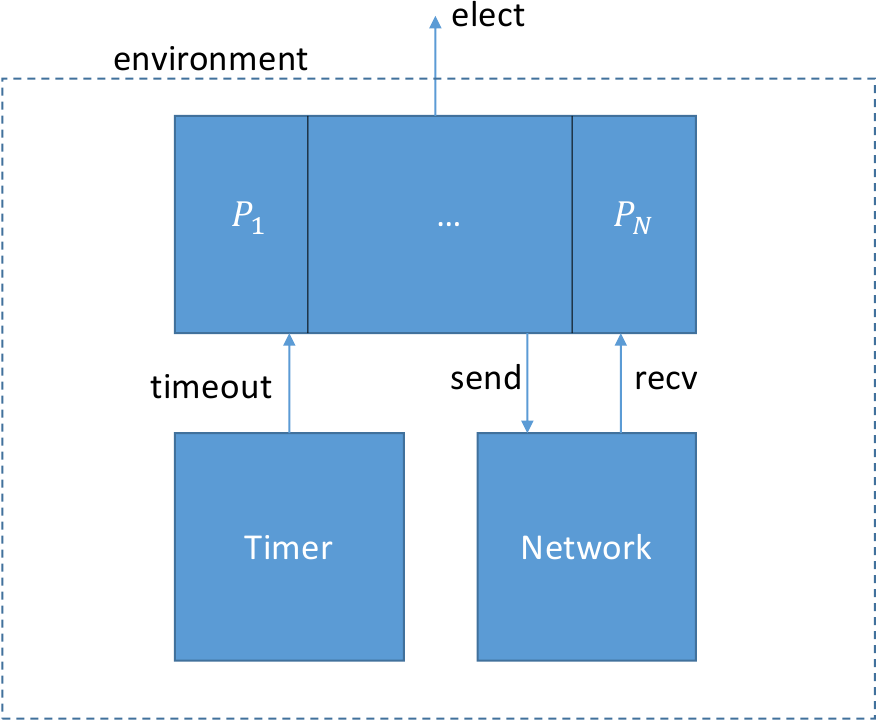
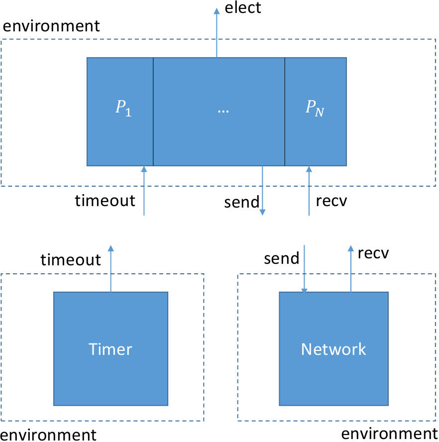

Layered protocols
We just saw a very simple example of compositional testing of a peer-to-peer interface. It’s also possible to use compositional testing at the interface between layers in a layered protocol stack.
As an example, let’s look at the very simple leader election protocol, introduced in this paper in 1979.
In this protocol we have a collection of distributed processes
organized in a ring. Each process can send messages to its right
neighbor in the ring and receive message from left neighbor. A process
has a unique id drawn from some totally ordered set (say, the
integers). The purpose of the protocol is to discover which process
has the highest id value. This process is elected as the “leader”.
This protocol itself is trivially simple. Each process transmits its
own id value. When it receives a value, it retransmits the value,
but only if it is greater than the process’ own id value. If a
process receives its own id, this value must have traveled all the
way around the ring, so the process knows its id is greater than all
others and it declares itself leader.
Interface specifications
We’ll start with a service specification for this protocol:
object asgn = {
function pid(X:node.t) : id.t
axiom [injectivity] pid(X) = pid(Y) -> X = Y
}
object serv = {
action elect(v:node.t)
object spec = {
before elect {
assert asgn.pid(v) >= asgn.pid(X)
}
}
}
The abstract type node.t represents a reference to a process in our
system (for example, its network address). The asgn object defines
an assignment of id values to nodes, represented by the function
pid. The fact that the id values are unique is guaranteed by the
axiom injectivity.
The service specification serv defines one action elect which is
called when a given node is elected leader. Its specification says
that only the node with the maximum id value can be elected.
Our protocol consists of a collection of concurrent process layered on top of two services: a network service and a timer service:

Let’s consider now the two intermediate interfaces. The specification for the network service is quite simple and comes from IVy’s standard library:
module ip_simple(addr,pkt) = {
import action recv(dst:addr,v:pkt)
export action send(src:addr,dst:addr,v:pkt)
object spec = {
relation sent(V:pkt, N:addr)
after init {
sent(V, N) := false
}
before send {
sent(v,dst) := true
}
before recv {
assert sent(v,dst)
}
}
}
The interface is a module with two parameters: the type addr of
network addresses, and the type pkt of packets. It has two actions,
recv and send. The relation sent tells us which values have been sent to which
nodes. Initially, nothing has been sent. The interface provides two
actions send and recv which are called, respectively, when a value
is sent or received. The src and dst parameters respectively give the source
and desitination addresses of the packets.
The specification says that a value is marked as sent when send
occurs and a value must be marked sent before it can be received.
This describes a network service that can duplicate or re-order
messages, but cannot corrupt messages.
The specification of the timer service is also quite simple and comes from the standard libarary:
module timeout_sec = {
import action timeout
}
The timer service simply calls timeout from time to time, with no
specification as to when.
Protocol implementation
Now that we have the specificaitons of all the interfaces, let’s define the protocol itself:
instance net : ip_simple(node.t,id.t)
instance timer(X:node.t) : timeout_sec
object proto = {
implement timer.timeout(me:node.t) = {
call trans.send(node.next(me),asgn.pid(me))
}
implement net.recv(me:node.t,v:id.t) {
if v = asgn.pid(me) { # Found a leader!
call serv.elect(me)
}
else if v > asgn.pid(me) { # pass message to next node
call trans.send(node.next(me),v)
}
}
}
We create one instance of the network module, and one timer for each
node. The protocol implements the interface actions timer.timeout
and net.recv. When a node times out, it transmits the node’s id to
the next process in the ring, defined by the the action
node.next (which we’ll define shortly).
When a node receives an id value v, it checks whether v
is its own id according to the id assignment asgn. If so, the
process knows it is leader and calls serv.elect. Otherwise, if the
received value is greater, it calls net.send to send the value on to
the next node in the ring.
With our protocol implemented, we still need to provide concrete types
for node and id. If we were formally verifying the protocol, we
would probably treat these as abstract datatypes with specified
mathematical properties. For testing, though, we just need some
concrete types. Here is one possiblity:
object node = {
type t
interpret t -> bv[1]
action next(x:t) returns (y:t) = {
y := x + 1
}
}
object id = {
type t
interpret t -> bv[8]
}
That is, node addresses are one-bit binary numbers (meaning we have just two nodes, and id’s are 8-bit numbers. Often it’s a good idea to start testing with small datatypes. In the case of the leader election ring, more nodes would increase the amount of time needed to see an election event.
Compositionally testing the leader election protocol
We’re going to divide the system into three isolates, one for each of its major components. Here is what the three isolates will look like:

Here are the isolate definitions:
trusted isolate iso_p = proto with serv,node,id,asgn,net,timer
trusted isolate iso_t = timer
trusted isolate iso_n = net with node,id
We added the keyword trusted to these isolates to indicate to IVy
that they will be verified informally by testing. Notice that the
isolate for proto contains its service specification as well as the
specifications of all of the other components. We need to test that
proto lives up to its guarantees at all of its interfaces, provided
that all of its assumptions hold. On the other hand, net needs only
the specifications of node and id (the net object contains its
own service specification).
We can now use IVy to compile test environments for each of the isolates, based on the interface specifications. Let’s start with the high-level protocol:
$ ivy_to_cpp isolate=iso_p target=test build=true leader_election_ring.ivy
g++ -I $Z3DIR/include -L $Z3DIR/lib -g -o leader_election_ring leader_election_ring.cpp -lz3
We run the tester:
$ ./leader_election_ring
> timer.timeout(1)
< net.send(1,0,170)
> net.recv(0,170)
< net.send(0,1,170)
> net.recv(0,170)
< net.send(0,1,170)
> net.recv(0,170)
< net.send(0,1,170)
> timer.timeout(0)
< net.send(0,1,149)
> timer.timeout(0)
< net.send(0,1,149)
> timer.timeout(0)
< net.send(0,1,149)
> net.recv(0,170)
...
> net.recv(0,170)
< net.send(0,1,170)
> timer.timeout(0)
< net.send(0,1,149)
> net.recv(1,170)
< serv.elect(1)
In this run, process 1 times out and sends its id 170 to process
- Process 0 receives this id and forwards it back to process 1 (meaning process 0’s id must be less than 170). Later, process 0 times out and sends its id 149 to process 1. Eventually, the network decides to deliver to process 1 the message with its own id, causing process 1 to be elected. When this happens, the assertion monitor checkes that in fact process 1 has the highest id.
The important point here is that there is no actual network. The
tester is simulating the network by randomly selecting actions
consistent with the history of actions at the interface. In practice,
this means that the tester stores the relation sent (the state of
the network interface specification) and only calls net.recv with
packets that have been previously sent. When there are multiple
choices, the tester makes an effort to select uniformly. This is a
hard problem in general, however. In practice the distribution will be
non-uniform. If you look at the calls to net.recv, you can see that
there is some duplication of sent packets, as we would expect.
We can see here a major advantage of compositional testing over integration testing. If we used a real network to test our protocol, we might have to wait a long time for a packet duplication to occur (in fact, this might never occur unless we take care to stress the network appropriately). The resilience of our protocol to packet duplication would not be well tested, as it is here. Similarly, our protocol might have unintended dependences on timing. Since timeout events are being generated randomly here, and not based on wall clock time, we can see timings that might occur rarely in the actual system, perhaps only under very heavy load.
Now let’s turn to the network isolate. We compile and run:
$ ivy_to_cpp isolate=iso_n target=test build=true leader_election_ring.ivy
g++ -I $Z3DIR/include -L $Z3DIR/lib -g -o leader_election_ring leader_election_ring.cpp -lz3
./leader_election_ring
> net.send(0,0,168)
< net.recv(0,168)
> net.send(0,0,243)
< net.recv(0,243)
> net.send(0,0,13)
< net.recv(0,13)
> net.send(1,0,108)
> net.send(0,0,84)
> net.send(0,0,78)
< net.recv(0,108)
< net.recv(0,84)
< net.recv(0,78)
> net.send(1,0,17)
< net.recv(0,17)
> net.send(0,1,167)
< net.recv(1,167)
> net.send(1,0,3)
> net.send(0,1,13)
...
The object net is actually just a wrapper around the operating
system’s networking API. Therefore, when we test net, we are
actually testing the operating system’s networking stack. Fortunately,
testing reveals no errors. Notice though, that the tester is
generating a wider variety of packets than the protocol could
actually generate. In fact, it’s simply generating packet values
uniformly at random. In this sense, the network stack is also being
better tested than it would be if composed with the actual protocol.
Finally, we can test the timer:
$ ivy_to_cpp isolate=iso_t target=test build=true leader_election_ring.ivy
g++ -I $Z3DIR/include -L $Z3DIR/lib -g -o leader_election_ring leader_election_ring.cpp -lz3
./leader_election_ring
< timer.timeout(0)
< timer.timeout(1)
< timer.timeout(0)
< timer.timeout(1)
< timer.timeout(0)
< timer.timeout(1)
< timer.timeout(0)
< timer.timeout(1)
< timer.timeout(0)
...
Not very interesting, but it shows both timeouts occurring once every second, which is what we expect. Again, we are really testing the operating system here (and also IVy’s run time scheduler, which uses the operating system API).
Running the protocol
Now that we’ve tested the components, we can compile the whole system
and run it as a collection of independent processes. Our protocol is an
example of a parameterized object. Ivy can decompose it
into a collection of processes based on the parameter me. Each
value of the parameter becomes an individual process. This
transformation is called parameter stripping.
To do this, we use the following declaration:
extract iso_impl(me:node.t) = proto(me),net(me),timer(me),node,id,asgn
This describes a special kind of isolate called an extract. Extracts
are intended to be run in production and don’t include the
specification monitors. In the extract declaration, me is a symbolic
constant that represents the first parameter of of each action and
state component in the object. This parameter is “stripped” by
replacing it with the symbolic constant me.
Before thinking about this too hard, let’s just run it to see what
happens. We compile as usual, with one difference: we use the option
target=repl. Instead of generating a test environment, IVy provides
a read-eval-print loop as the environment:
$ ivy_to_cpp target=repl isolate=iso_impl build=true leader_election_ring.ivy
g++ -I $Z3DIR/include -L $Z3DIR/lib -g -o leader_election_ring leader_election_ring.cpp -lz3
This produces an executable that takes one parameter me on the
command line. Let’s create two terminals A and B to run process 0 and
process 1 respectively:
A: $ ./leader_election_ring 0
A: >
B: $ ./leader_election_ring 1
B: >
A: < serve.elect
A: < serve.elect
A: < serve.elect
...
Notice that nothing happens when we start node 0. It is sending packets once per second, but they are being dropped because no port is yet open to receive them. After we start node 1, it forwards node 0’s packets, which causes node 0 to be elected (and to continues to be elected once per second).